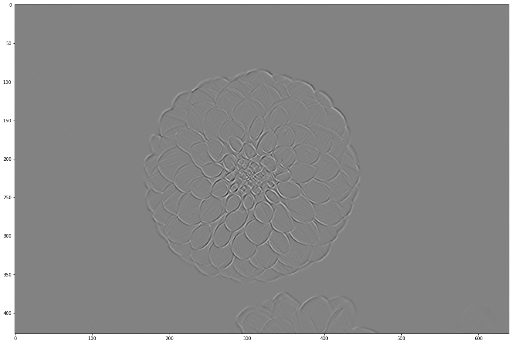
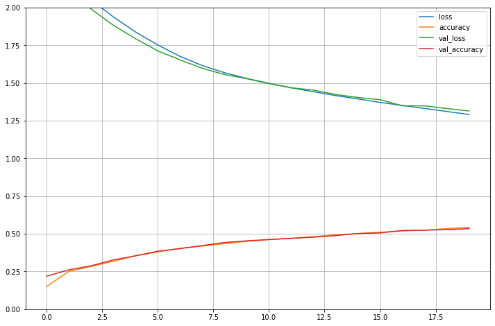

TP Module 2 : Les réseaux de neurones convolutifs
Concentrons nous maintenant sur les réseaux spécialisés dans le traîtement d'images.
| import tensorflow as tf
from tensorflow import keras
print(tf.__version__)
print(keras.__version__)
# Splitting
from sklearn.model_selection import train_test_split
import matplotlib.pyplot as plt
import pandas as pd
import random
import os
import numpy as np
# freeze de l'aléatoire, pour avoir des expériences reproductibles.
RANDOM_SEED = 42
os.environ['PYTHONHASHSEED'] = str(RANDOM_SEED)
random.seed(RANDOM_SEED)
np.random.seed(RANDOM_SEED)
os.environ['TF_DETERMINISTIC_OPS'] = '1'
tf.random.set_seed(RANDOM_SEED)
|
| comp = pd.DataFrame()
comp['run'] = []
comp['Perte'] = []
comp['Précision'] = []
|
Introduction : Convolution et Pooling
La vision assistée par ordinateur (Computer Vision) n'est pas née avec le Deep Learning, c'est un domaine bien plus vieux que ça.
La différence est que précédemment, les filtres et leur poids étaient définis à la main.
Pour voir un peu ce que fait une convolution classique, observons ce que cela fait sur l'image suivante.
| from sklearn.datasets import load_sample_image
flower = load_sample_image('flower.jpg')/255
# L'image étant sur 3 canaux RGB, transformons la en noir et blanc.
def rgb2gray(rgb):
return np.dot(rgb[...,:3], [0.2989, 0.5870, 0.1140])
grayscale = rgb2gray(flower).astype(np.float32)
|
| plt.figure(figsize = (20,18))
plt.imshow(grayscale, cmap="gray")
plt.show
grayscale.shape
(427, 640)
|

Pour les besoins de l'exemple, l'image a été convertie en niveau de gris, pour savoir pour les coefficients \([0.2989, 0.5870, 0.1140]\) sont présents dans la fonction rgb2gray, vous pouvez regarder la source suivante.
Vérifions qu'elle a bien été transformée en niveau de gris, ie il n'y plus qu'un seul canal (et donc il n'est pas affiché par shape.)
| print(flower.shape, grayscale.shape)
(427, 640, 3) (427, 640)
|
Voici quelques noyaux de convolutions utilisés avant les techniques de deep learning modernes, source.
| identity = np.array([[0, 0, 0],
[0, 1, 0],
[0, 0, 0]], dtype=np.float32)
contour1 = np.array([[1, 0, -1],
[0, 0, 0],
[-1, 0, 1]], dtype=np.float32)
contour2 = np.array([[0, 1, 0],
[1, -4, 1],
[0, 1, 0]], dtype=np.float32)
contour3 = np.array([[-1, -1, -1],
[-1, 8, -1],
[-1, -1, -1]], dtype=np.float32)
upscaling = np.array([[0, -1, 0],
[-1, 5, -1],
[0, -1, 0]], dtype=np.float32)
box_blur = np.array([[1/9, 1/9, 1/9],
[1/9, 1/9, 1/9],
[1/9, 1/9, 1/9]], dtype=np.float32)
gauss_blur = np.array([[1/16, 1/8, 1/16],
[1/8, 1/4, 1/8],
[1/16, 1/8, 1/6]], dtype=np.float32)
|
| def conv(img,kernel):
ker_height, ker_width = kernel.shape
height, width = img.shape
tf_ker = tf.reshape(kernel, (ker_height, ker_width, 1, 1))
tf_img = tf.reshape(img, (-1, height, width, 1))
#print(tf_ker.dtype, tf_gray.dtype)
outputs= tf.nn.conv2d(tf_img, tf_ker, strides=1, padding="SAME")
plt.figure(figsize = (20,18))
plt.imshow(outputs[0,:,:,0], cmap='gray')
plt.show
|
TensorFlow
| conv(grayscale, gauss_blur)
|


Anatomie d'une couche convolutive, CNN
Premièrement, importons les librairies dont nous aurons besoin.
| from tensorflow.keras import models
from tensorflow.keras.layers import Dense
from tensorflow.keras.layers import Flatten
from tensorflow.keras.layers import Input
from tensorflow.keras.layers import Activation
from tensorflow.keras.layers import Conv2D
from tensorflow.keras.layers import MaxPooling2D
from tensorflow.keras import optimizers
|
Avec l'API séquentielle, écrivons un CNN avec uniquement 2 couches convolutives. Evidemment il n'est pas fait pour de l'entraînement, il n'y a même pas de couche classifiante, mais utilisons le pour comprendre la structure.
| model = models.Sequential([
Input(shape=(4,4,3)),
Conv2D(8, (3,3), padding='same', name='conv1'),
Conv2D(4, (3,3), padding='same', name='conv2')
])
|
| model.summary()
Model: "sequential_1"
_________________________________________________________________
Layer (type) Output Shape Param #
=================================================================
conv1 (Conv2D) (None, 4, 4, 8) 224
_________________________________________________________________
conv2 (Conv2D) (None, 4, 4, 4) 292
=================================================================
Total params: 516
Trainable params: 516
Non-trainable params: 0
_________________________________________________________________
|
Regardons comment se comporte la première couche convolutive nommée conv1.
| layer = model.get_layer('conv1')
weights, biases = layer.get_weights()
print(f"Nombre de canaux en entrée : {weights.shape[2]},\n"
f"Nombre de neurones dans la couche : {weights.shape},\n"
f"Biais : {biases.shape}")
Nombre de canaux en entrée : 3,
Nombre de neurones dans la couche : (3, 3, 3, 8),
Biais : (8,)
|
Exercice
Pouvez vous déterminer à quoi correspond chacun des nombres dans weights.shape ?
TensorFlow
Dans une couche convolutive, les poids obtenues par weights.shape correspondent à
\[
(\text{kernel_height}, \text{kernel_width}, \text{in_channels}, \text{out_channels}).
\]
Exercice
- Pourquoi le nombre d'entrées de
conv1 est il égal à \(3\) ?
- Quel est le nombre total de poids de
conv1 ?
TensorFlow
\[
3 \times 3 \times 3 \times 8 = 216
\]
- Pourquoi n'y a t'il que \(8\) biais ?
Exercice
| layer = model.get_layer('conv2')
weights2, biases2 = layer.get_weights()
print(f"Nombre d'entrées : {weights2.shape[2]},\n"
f"Nombre de neurones dans la couche : {weights2.shape},\n"
f"Biais : {biases2.shape}")
|
- Pourquoi le nombre d'entrées de
conv2 est il égal à \(8\) ?
- Quel est le nombre total de poids de
conv2 ?
TensorFlow
\[
3 \times 3 \times 8 \times 4 = 198
\]
- Pourquoi n'y a t'il que \(4\) biais ?
L'opération de pooling
Comme expliquée, l'opération de pooling est là pour diminuer l'information présente dans les pixels proches, en appliquant une opération d'aggrégation.
Avec tf.keras les couches de pooling sont appellées via tf.keras.layers.
Exercice
Dans la suite est définie une fonction permettant de voir l'effet du pooling sur notre fleur.
Malheureusement j'ai oublié comment on appelle les couches
- average pooling 2D,
- maximum pooling 2D.
Regardez la doc de l'API tf.keras.layers et chercher la dénomination de ces deux couches (indice, le nom est dans le menu défilent de droite)
et placez le nom nom de la couche à la place de tf.keras.layers.FONCTION
- L'image que l'on placera dans la variable img sera celle définie avant grayscale.
pool_size correspond à la taille du filtre de pooling. Commencez avec 2, puis n'hésitez pas à changer voir voir ce que cela fait.
| def pool(img,pool_size):
height, width = img.shape
tf_img = tf.reshape(img, (-1, height, width, 1))
out=tf.keras.layers.FONCTION(pool_size, padding='valid')(tf_img)
pool = out[0,:,:,0]
plt.figure(figsize = (16,16))
plt.grid(True)
plt.imshow(pool)
plt.show
print(f'Les dimensions avant pooling sont {img.shape} \n'
f'Les dimensions après pooling sont {pool.shape}')
|
TensorFlow : average pooling 2D
| def pool(img,pool_size):
height, width = img.shape
tf_img = tf.reshape(img, (-1, height, width, 1))
out=tf.keras.layers.AvgPool2D(pool_size, padding='valid')(tf_img)
pool = out[0,:,:,0]
plt.figure(figsize = (16,16))
plt.grid(True)
plt.imshow(pool)
plt.show
print(f'Les dimensions avant pooling sont {img.shape} \n'
f'Les dimensions après pooling sont {pool.shape}')
|
Exercice
- Essayez avec
pool(grayscale,4).
TensorFlow
| pool(grayscale,4)
Les dimensions avant pooling sont (427, 640)
Les dimensions après pooling sont (106, 160)
|
- Dans
pool, changez la fonction d'average pooling 2D par un max pool 2D, puis voyez le résultat avec pool(grayscale,2).
TensorFlow
| def pool(img,pool_size):
height, width = img.shape
tf_img = tf.reshape(img, (-1, height, width, 1))
out=tf.keras.layers.MaxPool2D(pool_size, padding='valid')(tf_img)
pool = out[0,:,:,0]
plt.figure(figsize = (16,16))
plt.grid(True)
plt.imshow(pool)
plt.show
print(f'Les dimensions avant pooling sont {img.shape} \n'
f'Les dimensions après pooling sont {pool.shape}')
|
| pool(grayscale,2)
Les dimensions avant pooling sont (427, 640)
Les dimensions après pooling sont (213, 320)
|

Voici un exemple "à la main".
| test_img2 = np.array([[0,0,0,0,0,0,0,0],
[0,0,1,1,1,0,0,0],
[0,0,1,0,1,0,0,0],
[0,0,1,0,1,0,0,0],
[0,0,1,1,1,0,0,0],
[0,0,1,0,1,0,0,0],
[0,0,1,0,1,0,0,0],
[0,0,1,1,1,0,0,0]], dtype=np.float32)
plt.figure(figsize = (16,16))
plt.grid(True)
plt.imshow(test_img2)
plt.show
|

| tf_img = tf.reshape(test_img2, (1,8, 8, 1))
out=tf.keras.layers.MaxPool2D(2)(tf_img)
pool = out[0,:,:,0]
plt.figure(figsize = (8,8))
plt.grid(True)
plt.imshow(pool)
plt.show
print(pool.shape)
|
Effectivement on perd de l'information. Mais qu'est ce qui était le plus le plus important ? le fait que ça ressemble à un 8, ou le fait que que la figure était plus haute que large ?
Construction et entraînement d'un CNN
Pour voir la différence entre les réseaux de neurones denses vu à la séance précédente et nos CNN, nous utiliserons de nouveau le dataset CIFAR-10.
Rappelons que le dataset CIFAR-10 comprend \(60000\) images couleur \(32\times32\) réparties en \(10\) classes, avec \(6000\) images par classe. Il y a \(50000\) images d'entraînement et \(10000\) images de test.
| (X_train,y_train), (X_test,y_test) = tf.keras.datasets.cifar10.load_data()
print(X_train.shape, y_train.shape)
Downloading data from https://www.cs.toronto.edu/~kriz/cifar-10-python.tar.gz
170500096/170498071 [==============================] - 6s 0us/step
(50000, 32, 32, 3) (50000, 1)
|
Les classes présentes dans le dataset sont les suivantes, chacunes représentées par un chiffre de \(0\) à \(9\). Dans l'ordre nous avons :
- airplane
- automobile
- bird
- cat
- deer
- dog
- frog
- horse
- ship
- truck
C'est aussi un dataset très connu pour faire du benchmark de modèle dans le milieu académique. Revoyons, comme dans le tp précédent, à quoi ressemble ce dataset.
| class_names = ['airplane', 'automobile', 'bird', 'cat', 'deer', 'dog', 'frog', 'horse', 'ship', 'truck']
n_rows = 4
n_cols = 10
plt.figure(figsize=(n_cols * 2, n_rows * 2))
for row in range(n_rows):
for col in range(n_cols):
index = n_cols * row + col
plt.subplot(n_rows, n_cols, index + 1)
plt.imshow(X_train[index, : , :, :], cmap="binary", interpolation="nearest")
plt.axis('off')
plt.title(class_names[y_train[:,0][index]], fontsize=12)
plt.subplots_adjust(wspace=0.2, hspace=0.5)
|

Mettons le en forme et appliquons directement un One-Hot-Encoding sur les cibles.
| X_train = X_train.reshape(-1, 32, 32, 3).astype('float32')
X_test = X_test.reshape(-1, 32, 32, 3).astype('float32')
X_train, X_valid, y_train, y_valid = train_test_split(X_train, y_train, random_state=RANDOM_SEED)
X_test = (X_test - 127.5) / 127.5 # Normalize the images to [-1, 1]
X_train = (X_train - 127.5) / 127.5 # Normalize the images to [-1, 1]
X_valid = (X_valid - 127.5) / 127.5 # Normalize the images to [-1, 1]
y_train_oh = tf.keras.utils.to_categorical(y_train, num_classes=10)
y_test_oh = tf.keras.utils.to_categorical(y_test, num_classes=10)
y_valid_oh = tf.keras.utils.to_categorical(y_valid, num_classes=10)
print(y_train_oh.shape)
(37500, 10)
|
| model = models.Sequential([
Input(shape=(32, 32, 3)),
Conv2D(32, (3, 3), activation='relu'),
MaxPooling2D((2, 2)),
Conv2D(64, (3, 3), activation='relu'),
MaxPooling2D((2, 2)),
Conv2D(128, (3, 3), activation='relu'),
MaxPooling2D((2, 2)),
Conv2D(128, (3, 3), activation='relu'),
MaxPooling2D((2, 2)),
Flatten(),
Dense(10, activation='softmax')
])
model.summary()
|
Vous avez une erreur du type
InvalidArgumentError: Negative dimension size caused by subtracting 3 from 2 ...
| ---------------------------------------------------------------------------
InvalidArgumentError Traceback (most recent call last)
/usr/local/lib/python3.6/dist-packages/tensorflow/python/framework/ops.py in _create_c_op(graph, node_def, inputs, control_inputs, op_def)
1653 try:
-> 1654 c_op = pywrap_tf_session.TF_FinishOperation(op_desc)
1655 except errors.InvalidArgumentError as e:
InvalidArgumentError: Negative dimension size caused by subtracting 3 from 2 for '{{node conv2d_3/Conv2D}} = Conv2D[T=DT_FLOAT, data_format="NHWC", dilations=[1, 1, 1, 1], explicit_paddings=[], padding="VALID", strides=[1, 1, 1, 1], use_cudnn_on_gpu=true](max_pooling2d_2/Identity, conv2d_3/Conv2D/ReadVariableOp)' with input shapes: [?,2,2,128], [3,3,128,128].
During handling of the above exception, another exception occurred:
ValueError Traceback (most recent call last)
<ipython-input-13-7fe5ac773bd4> in <module>()
10 MaxPooling2D((2, 2)),
11 Flatten(),
---> 12 Dense(10, activation='softmax')
13 ])
14
/usr/local/lib/python3.6/dist-packages/tensorflow/python/training/tracking/base.py in _method_wrapper(self, *args, **kwargs)
454 self._self_setattr_tracking = False # pylint: disable=protected-access
455 try:
--> 456 result = method(self, *args, **kwargs)
457 finally:
458 self._self_setattr_tracking = previous_value # pylint: disable=protected-access
/usr/local/lib/python3.6/dist-packages/tensorflow/python/keras/engine/sequential.py in __init__(self, layers, name)
127 tf_utils.assert_no_legacy_layers(layers)
128 for layer in layers:
--> 129 self.add(layer)
130
131 @property
/usr/local/lib/python3.6/dist-packages/tensorflow/python/training/tracking/base.py in _method_wrapper(self, *args, **kwargs)
454 self._self_setattr_tracking = False # pylint: disable=protected-access
455 try:
--> 456 result = method(self, *args, **kwargs)
457 finally:
458 self._self_setattr_tracking = previous_value # pylint: disable=protected-access
/usr/local/lib/python3.6/dist-packages/tensorflow/python/keras/engine/sequential.py in add(self, layer)
211 # If the model is being built continuously on top of an input layer:
212 # refresh its output.
--> 213 output_tensor = layer(self.outputs[0])
214 if len(nest.flatten(output_tensor)) != 1:
215 raise ValueError(SINGLE_LAYER_OUTPUT_ERROR_MSG)
/usr/local/lib/python3.6/dist-packages/tensorflow/python/keras/engine/base_layer.py in __call__(self, *args, **kwargs)
920 not base_layer_utils.is_in_eager_or_tf_function()):
921 with auto_control_deps.AutomaticControlDependencies() as acd:
--> 922 outputs = call_fn(cast_inputs, *args, **kwargs)
923 # Wrap Tensors in `outputs` in `tf.identity` to avoid
924 # circular dependencies.
/usr/local/lib/python3.6/dist-packages/tensorflow/python/keras/layers/convolutional.py in call(self, inputs)
205 inputs = array_ops.pad(inputs, self._compute_causal_padding())
206
--> 207 outputs = self._convolution_op(inputs, self.kernel)
208
209 if self.use_bias:
/usr/local/lib/python3.6/dist-packages/tensorflow/python/ops/nn_ops.py in __call__(self, inp, filter)
1104 call_from_convolution=False)
1105 else:
-> 1106 return self.conv_op(inp, filter)
1107
1108
/usr/local/lib/python3.6/dist-packages/tensorflow/python/ops/nn_ops.py in __call__(self, inp, filter)
636
637 def __call__(self, inp, filter): # pylint: disable=redefined-builtin
--> 638 return self.call(inp, filter)
639
640
/usr/local/lib/python3.6/dist-packages/tensorflow/python/ops/nn_ops.py in __call__(self, inp, filter)
235 padding=self.padding,
236 data_format=self.data_format,
--> 237 name=self.name)
238
239
/usr/local/lib/python3.6/dist-packages/tensorflow/python/ops/nn_ops.py in conv2d(input, filter, strides, padding, use_cudnn_on_gpu, data_format, dilations, name, filters)
2012 data_format=data_format,
2013 dilations=dilations,
-> 2014 name=name)
2015
2016
/usr/local/lib/python3.6/dist-packages/tensorflow/python/ops/gen_nn_ops.py in conv2d(input, filter, strides, padding, use_cudnn_on_gpu, explicit_paddings, data_format, dilations, name)
967 padding=padding, use_cudnn_on_gpu=use_cudnn_on_gpu,
968 explicit_paddings=explicit_paddings,
--> 969 data_format=data_format, dilations=dilations, name=name)
970 _result = _outputs[:]
971 if _execute.must_record_gradient():
/usr/local/lib/python3.6/dist-packages/tensorflow/python/framework/op_def_library.py in _apply_op_helper(op_type_name, name, **keywords)
742 op = g._create_op_internal(op_type_name, inputs, dtypes=None,
743 name=scope, input_types=input_types,
--> 744 attrs=attr_protos, op_def=op_def)
745
746 # `outputs` is returned as a separate return value so that the output
/usr/local/lib/python3.6/dist-packages/tensorflow/python/framework/func_graph.py in _create_op_internal(self, op_type, inputs, dtypes, input_types, name, attrs, op_def, compute_device)
593 return super(FuncGraph, self)._create_op_internal( # pylint: disable=protected-access
594 op_type, inputs, dtypes, input_types, name, attrs, op_def,
--> 595 compute_device)
596
597 def capture(self, tensor, name=None, shape=None):
/usr/local/lib/python3.6/dist-packages/tensorflow/python/framework/ops.py in _create_op_internal(self, op_type, inputs, dtypes, input_types, name, attrs, op_def, compute_device)
3325 input_types=input_types,
3326 original_op=self._default_original_op,
-> 3327 op_def=op_def)
3328 self._create_op_helper(ret, compute_device=compute_device)
3329 return ret
/usr/local/lib/python3.6/dist-packages/tensorflow/python/framework/ops.py in __init__(self, node_def, g, inputs, output_types, control_inputs, input_types, original_op, op_def)
1815 op_def = self._graph._get_op_def(node_def.op)
1816 self._c_op = _create_c_op(self._graph, node_def, inputs,
-> 1817 control_input_ops, op_def)
1818 name = compat.as_str(node_def.name)
1819 # pylint: enable=protected-access
/usr/local/lib/python3.6/dist-packages/tensorflow/python/framework/ops.py in _create_c_op(graph, node_def, inputs, control_inputs, op_def)
1655 except errors.InvalidArgumentError as e:
1656 # Convert to ValueError for backwards compatibility.
-> 1657 raise ValueError(str(e))
1658
1659 return c_op
ValueError: Negative dimension size caused by subtracting 3 from 2 for '{{node conv2d_3/Conv2D}} = Conv2D[T=DT_FLOAT, data_format="NHWC", dilations=[1, 1, 1, 1], explicit_paddings=[], padding="VALID", strides=[1, 1, 1, 1], use_cudnn_on_gpu=true](max_pooling2d_2/Identity, conv2d_3/Conv2D/ReadVariableOp)' with input shapes: [?,2,2,128], [3,3,128,128].
|
C'est normal, Rappelez vous que par défaut, l'opération de convolution, fait baisser la dimension des features maps. Plus on empile de couches convolutives, plus la dimension baisse, jusqu'à un point où la taille des features maps est tellement petite qu'il n'est plus possible d'appliquer une opération de convolution.
Pour contrer cela, on doit rajouter le paramètre padding='same' dans les couches de convolution.
| model = models.Sequential([
Input(shape=(32, 32, 3)),
Conv2D(32, (3, 3), padding='same'),
Activation('relu'),
MaxPooling2D((2, 2)),
Conv2D(64, (3, 3), padding='same'),
Activation('relu'),
MaxPooling2D((2, 2)),
Conv2D(128, (3, 3), padding='same'),
Activation('relu'),
MaxPooling2D((2, 2)),
Conv2D(128, (3, 3), padding='same'),
Activation('relu'),
MaxPooling2D((2, 2)),
Flatten(),
Dense(10, activation='softmax')
])
model.summary()
model.compile(loss = 'categorical_crossentropy',
optimizer=tf.keras.optimizers.SGD(lr=0.001),
metrics=['accuracy'])
|
Si l'on souhaite, il est évidemment possible de faire passer le modèle dans une fonction.
| def define_model(lr=0.001, num_classes=10):
model = models.Sequential([
Input(shape=(32, 32, 3)),
Conv2D(32, (3, 3), padding='same'),
Activation('relu'),
MaxPooling2D((2, 2)),
Conv2D(64, (3, 3), padding='same'),
Activation('relu'),
MaxPooling2D((2, 2)),
Conv2D(128, (3, 3), padding='same'),
Activation('relu'),
MaxPooling2D((2, 2)),
Conv2D(128, (3, 3), padding='same'),
Activation('relu'),
MaxPooling2D((2, 2)),
Flatten(),
Dense(num_classes, activation='softmax')
])
model.summary()
model.compile(loss = 'categorical_crossentropy',
optimizer=tf.keras.optimizers.SGD(lr=lr),
metrics=['accuracy'])
return model
model = define_model()
|
| history = model.fit(X_train, y_train_oh,
epochs = 20,
batch_size=32,
validation_data=(X_valid, y_valid_oh))
|
| import pandas as pd
import matplotlib.pyplot as plt
pd.DataFrame(history.history).plot(figsize=(12,8))
plt.grid(True)
plt.gca().set_ylim(0,2)
plt.show()
|
Vous devriez avoir un graphe similaire.

Vérifiez les métriques obtenues avec les commandes suivantes.
| loss, accuracy = model.evaluate(X_test,
y_test_oh)
comp = comp.append({'run': 'basic_CNN', 'Perte' : loss, 'Précision' : accuracy}, ignore_index=True)
print(comp)
|
Certes, la précision n'est pas terrible, mais ce que l'on a écrit comme modèle ici n'est pas terrible non plus.
Cependant, on peut remarquer une chose.
Avec un modèle composé uniquement de neurones denses, on était en sur-apprentissage dès l'époque 3 ou 4. Sauf qu'ici :
- La fonction de perte, que ce soit sur le dataset d'entraînement, comme sur le dataset de validation, se suivent et ne décrochent pas.
- Idem pour la précision.
Ce qui nous conforte dans notre idée que les CNNs sont fait pour du traitement d'images, et on a même pas encore rajouté la couche classifiante !
Pardon ? La couche classifiante n'est pas celle avec le softmax ?
Il faut comprendre 2 choses :
- Les couches convolutives sont très bonnes pour extraires des caractéristiques geométriques des images,
- Les couches denses sont là pour faire les combinaisons linéaires des vecteurs qui semblent les plus appropriées.
Ainsi, un CNN peut se décomposer en deux parties :
- La partie d'extraction des caractéristiques avec les couches convolutives et de pooling.
- La partie classifiante avec les neurones denses.
Mais pour pouvoir passer de l'une à l'autre, il faut êêtre capable d'aplanir des matrices, c'est le fameux Flatten().
Dans la pratique on ne met pas non plus autant de d'opération de pooling entre les couches convolutives.
Exercice
En vous aidant du modèle précedent, construisez le modèle séquentiel avec l'architecture suivante.
| Input(shape=(32, 32, 3)),
Conv2D(32, (3, 3)),
Conv2D(64, (3, 3)),
MaxPooling2D((2, 2)),
Conv2D(128, (3, 3)),
Conv2D(128, (3, 3)),
MaxPooling2D((2, 2)),
Conv2D(256, (3, 3)),
Conv2D(256, (3, 3)),
MaxPooling2D((2, 2)),
Flatten(),
Dense(256),
Dense(128),
Dense(10, activation='softmax')
|
La fonction d'activation pour passer d'une couche à l'autre sera la fonction relu. Pour les couches convolutives on fixera padding=same.
Entraînez ce modèle, les paramètres de model.compile et model.fit seront les mêmes que précédemment.
TensorFlow
| model2 = models.Sequential([
Input(shape=(32, 32, 3)),
Conv2D(32, (3, 3), activation='relu', padding='same'),
Conv2D(64, (3, 3), activation='relu', padding='same'),
MaxPooling2D((2, 2)),
Conv2D(128, (3, 3), activation='relu', padding='same'),
Conv2D(128, (3, 3), activation='relu', padding='same'),
MaxPooling2D((2, 2)),
Conv2D(256, (3, 3), activation='relu', padding='same'),
Conv2D(256, (3, 3), activation='relu', padding='same'),
MaxPooling2D((2, 2)),
Flatten(),
Dense(256),
Activation('relu'),
Dense(128),
Activation('relu'),
Dense(10, activation='softmax')
])
model2.summary()
|
| Model: "sequential_2"
_________________________________________________________________
Layer (type) Output Shape Param #
=================================================================
conv2d_8 (Conv2D) (None, 32, 32, 32) 896
_________________________________________________________________
conv2d_9 (Conv2D) (None, 32, 32, 64) 18496
_________________________________________________________________
max_pooling2d_8 (MaxPooling2 (None, 16, 16, 64) 0
_________________________________________________________________
conv2d_10 (Conv2D) (None, 16, 16, 128) 73856
_________________________________________________________________
conv2d_11 (Conv2D) (None, 16, 16, 128) 147584
_________________________________________________________________
max_pooling2d_9 (MaxPooling2 (None, 8, 8, 128) 0
_________________________________________________________________
conv2d_12 (Conv2D) (None, 8, 8, 256) 295168
_________________________________________________________________
conv2d_13 (Conv2D) (None, 8, 8, 256) 590080
_________________________________________________________________
max_pooling2d_10 (MaxPooling (None, 4, 4, 256) 0
_________________________________________________________________
flatten_2 (Flatten) (None, 4096) 0
_________________________________________________________________
dense_2 (Dense) (None, 256) 1048832
_________________________________________________________________
activation_4 (Activation) (None, 256) 0
_________________________________________________________________
dense_3 (Dense) (None, 128) 32896
_________________________________________________________________
activation_5 (Activation) (None, 128) 0
_________________________________________________________________
dense_4 (Dense) (None, 10) 1290
=================================================================
Total params: 2,209,098
Trainable params: 2,209,098
Non-trainable params: 0
_________________________________________________________________
|
| model2.compile(loss = 'categorical_crossentropy',
optimizer=tf.keras.optimizers.SGD(lr=0.001),
metrics=['accuracy'])
history = model2.fit(X_train, y_train_oh,
epochs = 20,
batch_size=32,
validation_data=(X_valid, y_valid_oh))
|
Après l'entraînement, vous pouvez comme d'habitude voir comment il s'en sort avec les commandes suivantes.
| pd.DataFrame(history.history).plot(figsize=(12,8))
plt.grid(True)
plt.gca().set_ylim(0,2)
plt.show()
|
| loss, accuracy = model2.evaluate(X_test,
y_test_oh)
comp = comp.append({'run': 'basic_CNN_2', 'Perte' : loss, 'Précision' : accuracy}, ignore_index=True)
comp
|
Il est temps de nous attaquer à un modèle plus intéressant : VGG16.
VGG16
VGG16 est un réseau de neurones publié en 2015 (du point de vue du deep learning, c'est vieux) par le groupe de recherche Visual Geometry Group de l'université d'Oxford.
A l'époque, ce réseau était au niveau de l'état de l'art, aujourd'hui des modèles plus rapides à entraîner et plus précis ont pris sa place, mais pour l'instant ils sont plus compliqué à coder, ce qui fait qu'il peut toujours faire office de couteau suisse et qu'il est encore parfois utilisé de nos jours.
Architecture

Dans l'article nous pouvons lire les choses suivantes :
-
“All hidden layers are equipped with the rectification (ReLU (Krizhevsky et al., 2012)) non-linearity.”
-
“Max-pooling is performed over a 2 × 2 pixel window, with stride 2.”
Donc la seule fonction d'activation, hormis celle pour classifier, est ReLU, de plus l'opération de pooling est le MaxPooling2D((2,2)), le stride est de 2.
Remarque : Si le stride est le même que la fenêtre de pooling, on a pas à le spécifier.
Concernant l'architecture complète du modèle, on la revoie ici, ie
Exercice
Ecrivez chacun des blocs de VGG16, via l'API fonctionnelle. Pour toutes les couches convolutives, le padding est padding='same'.
Attention à ne pas oublier les fonctions d'activations !
Regroupez tout cela pour construire le modèle.
N'oubliez pas que pour l'API fonctionnelle, on aura besoin des ces lignes de codes suivantes :
| from tensorflow.keras import Model
|
| model = Model(inputs=input, outputs=output)
|
| input = Input(shape=(32, 32, 3))
|
Et n'oubliez pas le Flatten().
1er Bloc
- \(\mathrm{Conv2D}(64, (3,3))\)
- \(\mathrm{Conv2D}(64, (3,3))\)
- \(\mathrm{MaxPool2D}\)
TensorFlow
| x = Conv2D(filters=64, kernel_size=3, padding='same', activation='relu')(input)
x = Conv2D(filters=64, kernel_size=3, padding='same', activation='relu')(x)
x = MaxPool2D(pool_size=2, strides=2, padding='same')(x)
|
2e Bloc
- \(\mathrm{Conv2D}(128, (3,3))\)
- \(\mathrm{Conv2D}(128, (3,3))\)
- \(\mathrm{MaxPool2D}\)
TensorFlow
| x = Conv2D(filters=128, kernel_size=3, padding='same', activation='relu')(x)
x = Conv2D(filters=128, kernel_size=3, padding='same', activation='relu')(x)
x = MaxPool2D(pool_size=2, strides=2, padding='same')(x)
|
3e Bloc
- \(\mathrm{Conv2D}(256, (3,3))\)
- \(\mathrm{Conv2D}(256, (3,3))\)
- \(\mathrm{Conv2D}(256, (3,3))\)
- \(\mathrm{MaxPool2D}\)
TensorFlow
| x = Conv2D(filters=256, kernel_size=3, padding='same', activation='relu')(x)
x = Conv2D(filters=256, kernel_size=3, padding='same', activation='relu')(x)
x = Conv2D(filters=256, kernel_size=3, padding='same', activation='relu')(x)
x = MaxPool2D(pool_size=2, strides=2, padding='same')(x)
|
4e Bloc
- \(\mathrm{Conv2D}(512, (3,3))\)
- \(\mathrm{Conv2D}(512, (3,3))\)
- \(\mathrm{Conv2D}(512, (3,3))\)
- \(\mathrm{MaxPool2D}\)
TensorFlow
| x = Conv2D(filters=512, kernel_size=3, padding='same', activation='relu')(x)
x = Conv2D(filters=512, kernel_size=3, padding='same', activation='relu')(x)
x = Conv2D(filters=512, kernel_size=3, padding='same', activation='relu')(x)
x = MaxPool2D(pool_size=2, strides=2, padding='same')(x)
|
5e Bloc
- \(\mathrm{Conv2D}(512, (3,3))\)
- \(\mathrm{Conv2D}(512, (3,3))\)
- \(\mathrm{Conv2D}(512, (3,3))\)
- \(\mathrm{MaxPool2D}\)
TensorFlow
| x = Conv2D(filters=512, kernel_size=3, padding='same', activation='relu')(x)
x = Conv2D(filters=512, kernel_size=3, padding='same', activation='relu')(x)
x = Conv2D(filters=512, kernel_size=3, padding='same', activation='relu')(x)
x = MaxPool2D(pool_size=2, strides=2, padding='same')(x)
|
Couche dense
- \(\mathrm{Dense}(256)\)
- \(\mathrm{Dense}(256)\)
- \(\mathrm{Dense}(10)\)
- \(\mathrm{Softmax}\)
TensorFlow
| x = Flatten()(x)
x = Dense(units=256, activation='relu')(x)
x = Dense(units=128 activation='relu')(x)
output = Dense(units=10, activation='softmax')(x)
|
Modèle complet
| input = Input(shape=(32, 32, 3))
x = Conv2D(filters=64, kernel_size=3, padding='same', activation='relu')(input)
x = Conv2D(filters=64, kernel_size=3, padding='same', activation='relu')(x)
x = MaxPooling2D(pool_size=2, strides=2, padding='same')(x)
x = Conv2D(filters=128, kernel_size=3, padding='same', activation='relu')(x)
x = Conv2D(filters=128, kernel_size=3, padding='same', activation='relu')(x)
x = MaxPooling2D(pool_size=2, strides=2, padding='same')(x)
x = Conv2D(filters=256, kernel_size=3, padding='same', activation='relu')(x)
x = Conv2D(filters=256, kernel_size=3, padding='same', activation='relu')(x)
x = Conv2D(filters=256, kernel_size=3, padding='same', activation='relu')(x)
x = MaxPooling2D(pool_size=2, strides=2, padding='same')(x)
x = Conv2D(filters=512, kernel_size=3, padding='same', activation='relu')(x)
x = Conv2D(filters=512, kernel_size=3, padding='same', activation='relu')(x)
x = Conv2D(filters=512, kernel_size=3, padding='same', activation='relu')(x)
x = MaxPooling2D(pool_size=2, strides=2, padding='same')(x)
x = Conv2D(filters=512, kernel_size=3, padding='same', activation='relu')(x)
x = Conv2D(filters=512, kernel_size=3, padding='same', activation='relu')(x)
x = Conv2D(filters=512, kernel_size=3, padding='same', activation='relu')(x)
x = MaxPooling2D(pool_size=2, strides=2, padding='same')(x)
x = Flatten()(x)
x = Dense(units=256, activation='relu')(x)
x = Dense(units=128, activation='relu')(x)
output = Dense(units=10, activation='softmax')(x)
vgg = tf.keras.Model(inputs=input, outputs=output)
vgg.summary()
|
Remarque
Dans le cas où certains blocs se répètent, ce qui est courant dans les architecture modernes, il est pratique des définir les blocs via des fonctions.
Définition des fonctions de blocs
| from tensorflow.keras.layers import ReLU
def conv2_relu_max(x, filters, kernel_size):
x = Conv2D(filters=filters,
kernel_size=kernel_size,
padding='same')(x)
x = ReLU()(x)
x = Conv2D(filters=filters,
kernel_size=kernel_size,
padding='same')(x)
x = ReLU()(x)
x = MaxPooling2D(pool_size=2, strides=2, padding='same')(x)
return x
def conv3_relu_max(x, filters, kernel_size):
x = Conv2D(filters=filters,
kernel_size=kernel_size,
padding='same')(x)
x = ReLU()(x)
x = Conv2D(filters=filters,
kernel_size=kernel_size,
padding='same')(x)
x = ReLU()(x)
x = Conv2D(filters=filters,
kernel_size=kernel_size,
padding='same')(x)
x = ReLU()(x)
x = MaxPooling2D(pool_size=2, strides=2, padding='same')(x)
return x
|
VGG16 se réécrit alors sous la forme plus concise suivante.
| input = Input(shape=(32, 32, 3))
x = conv2_relu_max(input, 64, 3)
x = conv2_relu_max(x, 128, 3)
x = conv3_relu_max(x, 256, 3)
x = conv3_relu_max(x, 512, 3)
x = conv3_relu_max(x, 512, 3)
x = Flatten()(x)
x = Dense(units=256, activation='relu')(x)
x = Dense(units=128, activation='relu')(x)
output = Dense(units=10, activation='softmax')(x)
vgg_short = tf.keras.Model(inputs=input, outputs=output)
vgg_short.summary()
|
| top5 = tf.keras.metrics.TopKCategoricalAccuracy()
vgg.compile(loss = 'categorical_crossentropy',
optimizer=tf.keras.optimizers.SGD(lr=0.001),
metrics=['accuracy',top5]
)
history = vgg.fit(X_train, y_train_oh,
epochs = 20,
batch_size=32,
validation_data=(X_valid, y_valid_oh))
pd.DataFrame(history.history).plot(figsize=(12,8))
plt.grid(True)
plt.gca().set_ylim(0,2)
plt.show()
|
L'architecture est certes plus complexe, mais on a une baisse constante de la perte, et la precision sur le dataset de validation suit de près cette du dataset d'entraînement.
Cependant, de par sa compléxité nous sommes à peine à \(20\%\) de précision après \(20\) époques (en moyenne, je suis à \(54\%\) pour une \(50\)-aines d'époques), ce qui veut dire que l'on aura besoin de l'entraîner plus longtemps. Mais il n'est surtout pas en sur-apprentissage !
| loss, accuracy, top5 = vgg.evaluate(X_test,
y_test_oh)
print(f'Perte : {loss:.3f}, Précision : {accuracy:.3f}')
comp = comp.append({'run': 'vgg_scratch', 'Perte' : loss, 'Précision' : accuracy}, ignore_index=True)
comp.head()
|
On sait coder VGG16, c'est vraiment cool. Mais notre modèle n'est pas optimisé, des gens avec beaucoup plus d'argent, des puissances de calculs et des plus gros dataset l'ont déjà optimisé.
C'est le principe de transfer learning, pour des tâches similaires, ici de la classification, autant réutilisé les poids déjà entraînés pour, heureusement, Tensorflow nous le permet via le transfert d'apprentissage.
Transfer Learning
Voyons maintenant comment l'on peut booster la précision en utilisant des modèles déjà entraînés par d'autres.
A la main
Dans un premier temps, pour voir un peu comment cela marche nous allons le faire nous même.
Avec le dataset Fashion MNIST, nous allons entraîner notre modèle à ne classifier que \(8\) classes sur les \(10\) présentes, puis nous réutiliserons les couches déjà entraînées afin de faire la base d'un nouveau modèle pour classifier les deux dernières. On espère que certaines caractéristiques apprises sur les \(8\) premières classes pourront nous être utiles pour le reste.
| # Téléchargeons fashion_mnist et regardons à quoi il ressemble.
(X_train,y_train), (X_test,y_test) = tf.keras.datasets.fashion_mnist.load_data()
print(X_train.shape, y_train.shape)
class_names = ["T-shirt/top", "Trouser", "Pullover", "Dress", "Coat",
"Sandal", "Shirt", "Sneaker", "Bag", "Ankle boot"]
n_rows = 4
n_cols = 10
plt.figure(figsize=(n_cols * 2, n_rows * 2))
for row in range(n_rows):
for col in range(n_cols):
index = n_cols * row + col
plt.subplot(n_rows, n_cols, index + 1)
plt.imshow(X_train[index, : , :, ], cmap="binary", interpolation="nearest")
plt.axis('off')
plt.title(class_names[y_train[index]], fontsize=12)
plt.subplots_adjust(wspace=0.2, hspace=0.5)
|

| X_train = X_train.reshape(-1, 28, 28, 1).astype('float32')
X_test = X_test.reshape(-1, 28, 28, 1).astype('float32')
X_train, X_valid, y_train, y_valid = train_test_split(X_train, y_train, random_state=RANDOM_SEED)
X_test = X_test/255
X_train = X_train/255
X_valid = X_valid/255
|
Définissons la fonction suivante pour séparer notre dataset en 2 tâches distinctes.
| def split_dataset(X, y):
y_8_or_9 = (y == 8) | (y == 9) # "Bag", "Ankle boot"
y_A = y[~y_8_or_9]
y_B = (y[y_8_or_9] == 9).astype(np.float32) # binary classification : est ce c'est une Ankle boot (classe 9)? (sinon on a le masque True, False)
return ((X[~y_8_or_9], y_A),
(X[y_8_or_9], y_B))
(X_train_A, y_train_A), (X_train_B, y_train_B) = split_dataset(X_train, y_train)
(X_valid_A, y_valid_A), (X_valid_B, y_valid_B) = split_dataset(X_valid, y_valid)
(X_test_A, y_test_A), (X_test_B, y_test_B) = split_dataset(X_test, y_test)
#Pour l'exemple, on prend beaucoup moins de données pour la classification binaire.
X_train_B = X_train_B[:200]
y_train_B = y_train_B[:200]
|
| print(f'X_train_A.shape : {X_train_A.shape} \n'
f'X_train_B.shape : {X_train_B.shape}')
X_train_A.shape : (35996, 28, 28, 1)
X_train_B.shape : (200, 28, 28, 1)
|
| set(y_train_A)
{0, 1, 2, 3, 4, 5, 6, 7}
|
| set(y_train_B)
{0.0, 1.0}
|
Reprenons le CNN classique du début, on l'utilise pour la classification du gros dataset.
| modelA = models.Sequential([
Input(shape=(28, 28, 1)),
Conv2D(32, (3, 3), activation='relu', padding='same'),
Conv2D(64, (3, 3), activation='relu', padding='same'),
MaxPooling2D((2, 2)),
Conv2D(128, (3, 3), activation='relu', padding='same'),
Conv2D(128, (3, 3), activation='relu', padding='same'),
MaxPooling2D((2, 2)),
Flatten(),
Dense(256),
Activation('relu'),
Dense(128),
Activation('relu'),
Dense(8, activation='softmax')
])
|
| modelA.compile(loss="sparse_categorical_crossentropy",
optimizer=keras.optimizers.SGD(lr=0.001),
metrics=["accuracy"])
history = modelA.fit(X_train_A, y_train_A,
epochs=20,
validation_data=(X_valid_A, y_valid_A))
|
Une fois ce premier entraînement fait. On peut sauvegarder le modèle (l'architecture et les poids) de la manière suivante.
Reprenons le même modèle, mais utilsons le maintenant pour une tâche de classification binaire.
| modelB = models.Sequential([
Input(shape=(28, 28, 1)),
Conv2D(32, (3, 3), activation='relu', padding='same'),
Conv2D(64, (3, 3), activation='relu', padding='same'),
MaxPooling2D((2, 2)),
Conv2D(128, (3, 3), activation='relu', padding='same'),
Conv2D(128, (3, 3), activation='relu', padding='same'),
MaxPooling2D((2, 2)),
Flatten(),
Dense(256),
Activation('relu'),
Dense(128),
Activation('relu'),
Dense(1, activation='sigmoid')
])
modelB.compile(loss="binary_crossentropy",
optimizer=keras.optimizers.SGD(lr=1e-3),
metrics=["accuracy"])
history = modelB.fit(X_train_B, y_train_B,
epochs=20,
validation_data=(X_valid_B, y_valid_B))
|
Passons à l'étape de transfer learning. On recharge d'abord le modèle à 8 classes
| modelA = keras.models.load_model("modelA.h5")
|
On prend toute l'architecture et tous les poids, SAUF la dernière couche de classification
| model_B_on_A = keras.models.Sequential(modelA.layers[:-1])
|
On ajoute la couche de classification spécifique.
| model_B_on_A.add(keras.layers.Dense(1, activation="sigmoid"))
|
L'idée est que des poids qui ont été entraîné pour un tâche spécifique, devrait être performant pour une tâche similaire, même si les deux datasets sont totalements disjoints.
Des couches entraînées à classifier des vêtements devraient être performants pour en classifier d'autres.
On à généralement 2 étapes.
-
On gèle les poids que l'on va utiliser pour le transfert d'apprentissage, seuls les poids de la couche classifiante formées des neurones denses se mettra à jour lors de l'étape de rétropropagation.
| for layer in model_B_on_A.layers[:-1]:
layer.trainable = False
|
-
On dégèle tout ou partie des poids, pour les spécialiser encore plus pour notre problème.
| for layer in model_B_on_A.layers[:-1]:
layer.trainable = True
|
Mettons ça en place.
| for layer in model_B_on_A.layers[:-1]:
layer.trainable = False
model_B_on_A.compile(loss="binary_crossentropy",
optimizer=keras.optimizers.SGD(lr=0.001),
metrics=["accuracy"])
# On entraîne avec les poids gelés pour 4 époques.
history = model_B_on_A.fit(X_train_B,
y_train_B,
epochs=4,
validation_data=(X_valid_B, y_valid_B))
# on dégèle tout pour 16 époques.
for layer in model_B_on_A.layers[:-1]:
layer.trainable = True
model_B_on_A.compile(loss="binary_crossentropy",
optimizer=keras.optimizers.SGD(lr=0.001),
metrics=["accuracy"])
history = model_B_on_A.fit(X_train_B, y_train_B,
epochs=16,
validation_data=(X_valid_B, y_valid_B))
|
Voyons ce que cela donne au niveau du taux d'erreur.
| _, accB = modelB.evaluate(X_test_B, y_test_B)
_, accB_on_A = model_B_on_A.evaluate(X_test_B, y_test_B)
np.round((100 - (accB*100)) / (100 - (accB_on_A*100)),2)
|
Avec un tel transfert d'apprentissage, le taux d'erreur devrait diminuer d'un facteur important !
Importation des poids de ImageNet
Imagenet et LE dataset de référence pour le benchmark de modèle est l'entraînement des modèles. Comme il contient plusieurs millions d'images, l'entraînement est long et coûteux, heureusement les géant de l'Internet comme Google l'ont déjà fait, ce qui veut dire que les poids de ce modèle sont spécialisés pour la classification.
Importer des bouts de modèles pré-entraînés se fait via la commande
| from tensorflow.keras.applications import VGG16
conv_base = VGG16(weights='imagenet', include_top=False, input_shape=(32, 32, 3))
|
include_top=False correspond au fait que nous n'utiliserons que la partie convolutive du modèle, c'est à nous d'ajouter la partie classifiante avec les neurones denses et la couches de sortie.
Dans une première approche, on peut figer ces poids (la SGD ne les mettra pas à jour).
| from tensorflow.keras.applications import VGG16
conv_base = VGG16(weights='imagenet', include_top=False, input_shape=(32, 32, 3))
conv_base.trainable = False
for layer in conv_base.layers:
print(f'{layer.name}, Trainable : {layer.trainable}')
|
Une fois que l'on a fait ça, on peut utiliser cette partie convolutive comme une couche à part entière de notre modèle. Réimportons tout d'abord le dataset cifar10 complet.
| (X_train,y_train), (X_test,y_test) = tf.keras.datasets.cifar10.load_data()
X_train = X_train.reshape(-1, 32, 32, 3).astype('float32')
X_test = X_test.reshape(-1, 32, 32, 3).astype('float32')
X_train, X_valid, y_train, y_valid = train_test_split(X_train, y_train, random_state=RANDOM_SEED)
X_test = (X_test - 127.5) / 127.5 # Normalize the images to [-1, 1]
X_train = (X_train - 127.5) / 127.5 # Normalize the images to [-1, 1]
X_valid = (X_valid - 127.5) / 127.5 # Normalize the images to [-1, 1]
# Il existe une autre fonction de tf.keras pour transformer de l'ordinal en one_hot
y_train_oh = tf.keras.utils.to_categorical(y_train, num_classes=10)
y_test_oh = tf.keras.utils.to_categorical(y_test, num_classes=10)
y_valid_oh = tf.keras.utils.to_categorical(y_valid, num_classes=10)
|
| vgg_tf = models.Sequential([
conv_base,
Flatten(),
Dense(256, activation='relu'),
Dense(128,activation='relu'),
Dense(10, activation='softmax')
])
# vgg_tf.summary()
vgg_tf.compile(loss = 'categorical_crossentropy',
optimizer= tf.keras.optimizers.SGD(lr=0.001),
metrics=['accuracy'])
history = vgg_tf.fit(X_train, y_train_oh,
epochs = 20,
batch_size=32,
validation_data=(X_valid, y_valid_oh))
|
| pd.DataFrame(history.history).plot(figsize=(12,8))
plt.grid(True)
plt.gca().set_ylim(0,2)
plt.show()
|
Ca avance doucement, mais on a encore du potentiel pour l'entraîner.
| loss, accuracy = vgg_tf.evaluate(X_test,
y_test_oh)
comp.append({'run': 'vgg_imagenet', 'Perte' : loss, 'Précision' : accuracy}, ignore_index=True)
|
Fine Tuning
Il fois que l'on pense que l'on a tiré tout ce que l'on pouvez extraire des poids que l'on a figé, on peut en débloquer tout ou partie, pour qu'ils se spécialisent sur notre problème de classification.
Dégel d'une partie
| conv_base.trainable = True
set_trainable = False
|
Débloquons tous les poids à partir de la couche nommée block5_conv1.
| for layer in conv_base.layers:
if layer.name == 'block5_conv1':
set_trainable = True
if set_trainable:
layer.trainable = True
else:
layer.trainable = False
for layer in conv_base.layers:
print(f'{layer.name}, Trainable : {layer.trainable}')
|
Dégel complet
| conv_base.trainable = True
for layer in conv_base.layers:
print(f'{layer.name}, Trainable : {layer.trainable}')
|
Lancement du fine tuning
| vgg_tf.compile(loss = 'categorical_crossentropy',
optimizer= tf.keras.optimizers.SGD(lr=0.001),
metrics=['accuracy'])
history = vgg_tf.fit(X_train, y_train_oh,
epochs = 10,
batch_size=32,
validation_data=(X_valid, y_valid_oh))
|
| pd.DataFrame(history.history).plot(figsize=(12,8))
plt.grid(True)
plt.gca().set_ylim(0,2)
plt.show()
|
| loss, accuracy = vgg_tf.evaluate(X_test,
y_test_oh)
comp = comp.append({'run': 'vgg_tf_tuned', 'Perte' : loss, 'Précision' : accuracy}, ignore_index=True)
comp
|